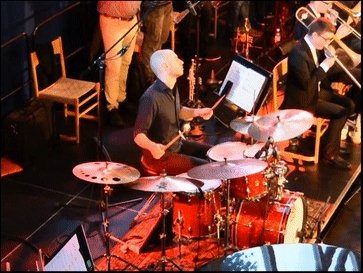
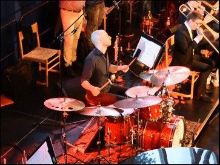
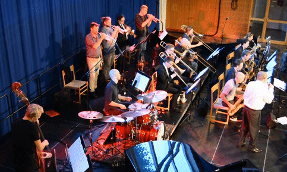
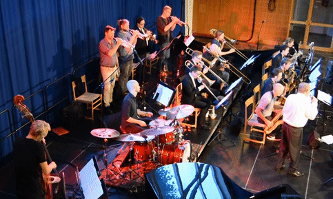
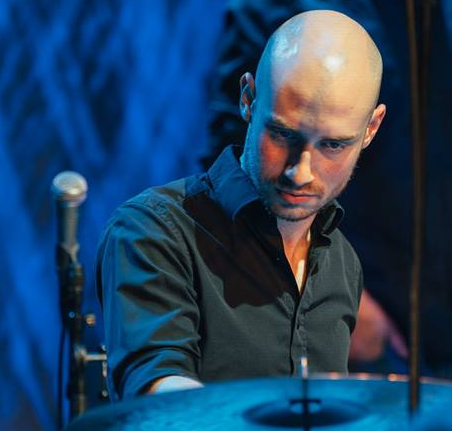
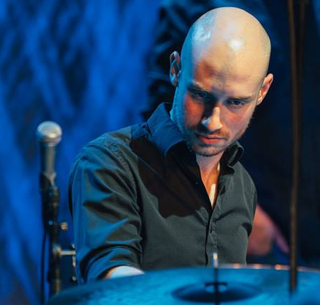

Trommeslager
Johns musikalske interesse startede ikke ved trommerne, men det var her at den for alvor satte sine rødder og gjorde musikken til en passion han ikke kunne ignorere. Glæden ved trommer finder han især i det store ansvar som følger med dette instrument, da det sætter rytmen for musikken, samtidigt med at det er et af de få instrumenter som man kan improvisere med, og derigennem sætte sit personlige præg på musikken.
Kapelmester
Siden 1500-tallet var Kapelmester betegnelsen for den musiker, der havde den musikalske ledelse i et instrumentalensemble. I vore dage er det oftest betegnelsen for en dirigent for et orkester, men i de rytmiske omgangskredse en betegnelse for en musikalsk leder af bandet. Som kapelmester påtager man sig at lede musikerne og showets gang. John har trods sin unge alder stor erfaring som kapelmester, bl.a. i hans arbejde med Danish Youth Jazz Orchestra.
Arrangør
Arrangøren skriver alle instrumenternes toner ned på papiret, og bestemmer de forskellige instrumenters opgaver i musikken. John Riddell er arrangør hos Danish Youth Jazz Orchestra. Det er et ungdomsbigband, der består af unge talenter, som vælger den jazzmusikalske vej. ”… plads til det vilde, skæve og eksperimenterende – men med rod i det traditionelle.” Der bliver spillet koncerter, lavet workshops og samarbejdet med Aarhus Jazz Orchestra, så de unge får en dybere forståelse for hvad det vil sige at være med i et bigbandorkester.
Dirigent
John Riddell er dirigent for Danish Youth Jazz Orkester. En dirigent står for at lede orkesteret når de spiller. Det er dirigentens job at fortolke musikkens tempo og frasering. Han skal så formidle fortolkning til orkesteret, så alle kan spille musikken på den samme måde uden fejl. En god dirigent sørger for at orkestret stoler på ham, og tør også selv stole på sit orkester.


 

 
  
